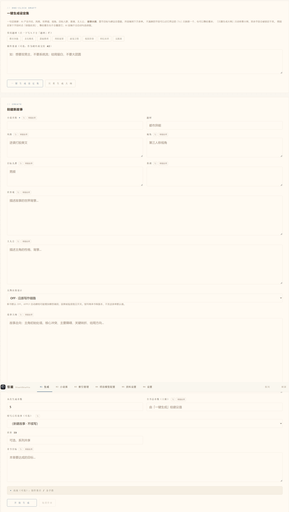
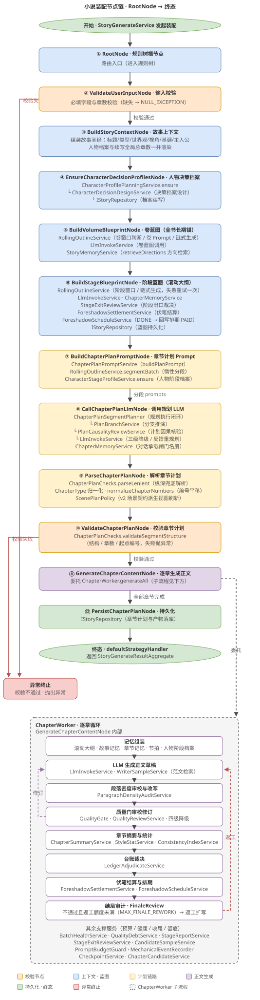

命名说明：源码项目名为
novel_factory（仓库、Maven 模块与 jar 均沿用此名），对外发布的桌面安装包更名为 StartDrafts——两者指同一套代码，下文出现的两个名字不做区分。
面向长篇小说与网文连载的无人值守生成产线。 从设定集、卷蓝图、阶段蓝图到逐章正文、审校、修订、定稿，整批跑完并留下可复核的体检报告；正式生成不设人工裁决点，异常要么有界兜底、要么明确失败。
实现形态是多智能体协作 + 确定性编排：规划、写手、审校、评审、裁决、摘要各由一个角色承担，可分别路由到不同模型甚至不同模型族——候选盲评刻意让写手与评审分属两族，专门对抗"自己评自己"的自偏好；而它们之间的先后与分支由显式管线节点链决定，不靠模型自行协商。
两种用法：写作者直接用 StartDrafts 桌面版（Windows 双击即用）；开发者读源码，把它当作长篇生成管线的工程参考实现。
技术栈：Java 17 · Spring Boot 3.4.3 · Spring AI 1.0（OpenAI Chat Completions / Anthropic Messages / OpenAI Responses 三协议）· Maven 多模块 · 内置向量库（Qdrant 可选）· Electron 桌面壳 · 原生前端 规模：6 个 Maven 模块 · 主代码 4.4 万行 / 测试 3.2 万行 · 134 个测试类 1,562 个用例

▶ 演示视频：
StartDrafts.Setup.exe —— 双击即用：自带 Java 运行时与内置向量库，无需 JDK、终端或 Docker；数据保存在 %APPDATA%\StartDrafts。
安装包未做代码签名，Windows 提示"未知发布者"时选择"仍要运行"。当前仅提供 Windows 安装包；macOS / Linux 可走下方源码方式。
| 档位 | 需要准备 | 能得到什么 |
|---|---|---|
| 桌面版（最简） | 安装包 + 一个 LLM 端点的 API Key（OpenAI 兼容 / Anthropic / Responses 协议均可）（或符合条件的 ChatGPT 套餐授权） | 双击即用，自带 Java 运行时与内置向量库。全流程可跑通：三账本、章节摘要、伏笔排期、一致性索引、批末体检——长篇要的那套约束一个都不少 |
| 源码运行 | 上面的 Key + JDK 17 + Maven 3.9（mvn package 后单 jar 启动） |
同上。适合想改代码或跑在非 Windows 系统上的开发者 |
| 质量档（推荐） | 上面任一档 + 一个 embedding 模型 API Key | 再开启向量增强：跨章记忆的语义唤醒、动态参考资料按需注入。这两项直接决定"写到第 60 章还记不记得第 8 章埋的线"。从 v0.2 起向量库已内置，不再需要 Qdrant——"变向量"靠 embedding API，"存向量"走本地文件 |
只准备第一/二档也完全可用，缺 embedding Key 时系统以"无向量增强"模式运行，并且批末体检的「无检索唤醒章数占比」指标会明确告诉你哪几章是裸跑的——不静默降级，是这套设计的通则。
⚠️ ChatGPT 套餐授权为实验性功能：它参照 OpenAI 第一方客户端（Codex CLI，Apache-2.0 开源）的实现对接订阅授权通道， 并非面向第三方应用的正式 API。OpenAI 变更该通道时功能可能失效，且请自行确认使用方式符合你的账号条款。
提示：两个 Key 可以是同一个供应商的同一把 Key——
LLM_API_KEY同时供对话与嵌入使用；要分开也可以，见快速开始。进阶用户仍可切回 Qdrant（
story.vector-store.mode: qdrant）。动态参考资料默认使用 LLM 索引选择，配置 Embedding API Key 后可在「06 设置 → 资料检索方式」切换到 向量语义检索。
按写一本长篇的顺序组织：设定 → 卷蓝图 → 阶段蓝图 → 逐章正文 → 审校修订 → 体检报告。每一步的结果都落成可 diff 的文件，下一步接着用。
给一个题材关键词，AI 产出书名、风格、世界观、视角、目标人群、基调、主人公、故事大纲、章节目标与建议总章数，回填到表单后逐项可改。不满意可以只重生成某一个字段，也可以只重生成大纲（其余字段锁定不变）。
卷蓝图定全书方向（一卷 = 一次剧情移动）；阶段蓝图在其窗口内滚动生成，每跨阶段边界出一版。蓝图含悬念档位表（3–6 档有序枚举）与逐章主线推进，两者分别管"走到第几格"和"这一章做了什么"。
蓝图带反套路检查：比对近 10 章实际摘要与本次章级推进，检出明确复述与"问题→能力解围→旁人认可"的重复循环，走一次带反馈返修。这是关键词启发式，不阻断生成，只在告警里留痕。
每章生成后自动跑审校（禁泄逐字扫描、一致性核对、AI 腔检测）、段落密度审校、必要时定向补丁修订。低置信章节触发候选盲评：异模型整章重写 + 机械门禁 + 异族评审二选一。
正文阅读时选中一段文字，浮动工具条给出三个动作：
结果以左右对照呈现（原文 / 改写后），你确认后才替换，再走常规保存（触发摘要回流）。轻量诉求不付整章修订的成本：单次短 prompt 调用，输出上限压到 2048 tokens。
打开一本书即进入书内工作区，四个页签分别管概要、正文、创作维护与运行记录。
创作维护是与正文分离的作者层：作者对已提取事实的纠正、以及"从第 N 章起我想让某条线这样走"的后续意图，都写进独立的维护版本，不改写任何已发生的正文。保存走预览 → 确认两步——预览按当前正文依据算出候选与哈希，保存必须带同一个哈希，中途被别处改动就会拒绝并提示重新预览。提取类纠正还必须绑定来源章号、正文版本与连续引文，对不上不许保存。
品质问题是作者对已生成问题的独立记账：可以备注、延后、标为误报，不改正文、不改质量债、不参与后续生成依据。
每批（默认 5 章）结束输出 30 项量化指标，每项带历史基线与可执行建议。这是判断"这批比上批是好是坏"的唯一依据——不是"生成完就结束"。
设置页登记多个中转站（OpenAI 兼容 / Anthropic / OpenAI Responses），一键拉取模型列表；全局、每个场景、兜底模型都可以只选"哪个站的哪个模型"，不必手填地址密钥。跨协议供应商（如评审指向 Anthropic 站）会自动切换客户端。
内置 58 篇写作资料 + 4 篇文风。在「04 资料配置」里可以导入自己的范例/题材资料（进同一套索引与向量检索），或按题材覆盖文风——无需改代码重新打包。
长篇连载（50 万字以上）靠单次提示无法保证质量，真正的难题是跨章的工程约束。本项目把每类约束做成机制：
| 长篇难题 | 对应机制 |
|---|---|
| 写到后面人物状态、持有物、时间线自相矛盾 | 三账本（角色/物品/势力）+ 一致性索引 + 时序锚（境界式锁定） |
| 账本/摘要"记录了正文里没有的事" | 证据链机械校验（8 档匹配）——模型必须给出正文原文引证，匹配不上就不入账 |
| 伏笔"埋了就忘"或"埋了立刻收" | 伏笔排期表（PLANNED→PLANTED→PAID/MISSED 状态机）+ 卷末清账裁决 + 动态权重（积压到阈值必须评估）+ 写手视图去元信息 |
| 写手"提前说漏嘴"谜底 | 禁泄清单：对谜底关键词在正文里逐字扫描，命中即 BLOCKING（不做语义判断，宁漏勿误报） |
| 模型自我修正的同质化陷阱 | 候选盲评：低置信章触发异模型整章重写 + 机械门禁 + 异族评审 |
| 反复用同一批套话与同一套情节 | 疲劳词表（内置 60+ 中文套话，可外部覆盖）+ 已用情节模式黑名单（舞台复用/同型冲突方/能力展示章数） |
| 计划写了、正文没写 | 计划遵循度：正文与计划事件的最长公共子串覆盖率，低于 0.6 即触发加审 |
| 时间/年龄漂移 | 时序锚 v2：计划声明的 timeAdvance 是唯一合法推进通道，审计回验 |
| "这批比上批是好是坏"无法归因 | 批末体检：30 项量化指标，每项带历史基线与可执行建议 |
| 长跑批中途失败、无人值守烧钱 | 逐章原子提交（正文与摘要同一次落盘，中断可补完）+ 逐章检查点/回滚 + token 预算熔断（命中后当前章写完即停，不留半截） |
| 摘要记错人物认知与承诺 | 人物状态投影：认知、信念、目标、决定、意图、行动与承诺分开记账，证据须在正文定位，未通过者隔离待核 |
| 计划场景前后因果断裂 | 场景契约（scenes 为唯一生成源）+ 可选因果核验（默认关闭，可只观察或驳回） |
| 想改设定又不想动正文 | 书内工作区：作者维护版本与执行引用分离，保存需预览哈希，纠正须绑定来源章与正文版本 |
这些是本项目与"多套几层提示词"最不一样的地方，也是它在长跑中不容易崩的原因：
1. 能机械校验的，绝不交给 LLM 判断。
摘要和账本最容易编造"正文里没有的事实"，所以每条状态都必须附 ≤50 字正文引证，再用 8 档匹配（精确→归一化→分段→短语覆盖→锚定→跨度）判定引证是否真实存在——"放宽的是表述，不是事实有无"。禁泄是逐字 indexOf 扫描，计划覆盖率是 LCS，重复用语是词表统计。判断标准始终是可复算，而不是"模型觉得像"。
2. 失败语义刻意不对称——该硬失败的地方不许静默降级。
向量资料检索失败会直接终止作业（注释写明：静默降级会让作业在低质量注入下跑完）；而 LLM 选择资料失败则静默返回空、不阻塞。模型降级链里唯一不换模型的是 CONTENT_POLICY（内容审计与换哪个模型无关）。预算熔断、检查点、自动续批则全部 fail-soft，不反噬主流程。哪里该硬、哪里该软，是逐处设计过的。
3. 状态机与生命周期，而不是散落的标志位。 写作模式按契约完整度自动判定（FREE / SCAFFOLDED / RECOVERY，缺计划就收紧而非自由发挥）；伏笔走四态；质量债用"连续 2 章无同维度复发"验证式核销，没有验证信号的债永不核销（不伪造结论）；全书完结上限是 sticky 的——只能下调不能抬高。
4. 状态尽量做成纯函数，可确定性重算。
伏笔权重 score = 重要性×10 + 滞留章数×5，续批决策 decide(...) 同样是纯函数——零新增存储，任何时刻都能从摘要重算，不存在"状态漂移需要修数据"。
5. 提示词预算是"块优先级淘汰"，而不是一刀切截断。 前缀由 8+ 个块拼成（末态红线/记忆/风格/一致性/禁泄/情节黑名单…），每块有独立封顶，但封顶之和会击穿窗口。所以装配层有总额预算，超预算时按块优先级淘汰，且渲染顺序与淘汰次序分离——丢谁和排谁在前是两件事。禁泄块标记为不可截断（截断会静默丢词），放不下就整块弃并在日志点名"依赖下游兜底"。预算日志强制自洽，可脚本对账。
6. 错误分类驱动重试与降级，而不是无脑重试。
供应商报错被分为 7 类，每类带两个正交布尔——"同模型重试是否有意义"和"换模型是否有意义"。UPSTREAM_INTERNAL（500/engine abort）被特别归为"换模型比原样重试更有效"——这条来自实测：某个模型跑 795 秒后被上游 abort。降级链硬上限 3 个，防止一条长链一次失败烧掉整串费用。
7. 有校准设施，而不是只能靠感觉调参。 审校判据留了 A/B 变体开关（默认 A 与生产逐字节一致）；"修订耗尽仍未解决的 BLOCKING"整包回流成离线校准集；另有一套需显式开关的评测框架（跨系统盲评、审校校准、运行时采样），共 6 个类 1428 行。
市面上多数小说生成工具是同一个形态：一句话设定 → 逐章循环生成 → 输出全文，跨章状态靠"把前文塞进上下文"。这个形态有三条假设，会随篇幅增长逐条失效：
本项目的取舍是：能机械校验的一律不进提示词；账本、伏笔、时间线全部落成可 diff 的文件；每批产出体检报告，让"变好还是变坏"可归因。判断标准不是"能不能生成"，而是"能不能定位到是哪一层机制没生效"。
工程深度不看行数，但下面这些数字能说明机制是真的在跑：
| 项 | 数量 |
|---|---|
| Maven 模块 | 6（types / api / domain / infrastructure / trigger / app） |
| 主代码 / 测试代码 | 50,853 行 / 34,866 行 |
| 测试类 / 用例 | 144 个 / 1,737 个（全绿） |
| 批末体检指标 | 30 项 |
| 质量门禁策略 | 19 个（quality/*Policy；该包共 26 个类） |
| 生成管线节点 | 11 个（node/*Node） |
| 记忆层 | 18 个类（memory/） |
| 提示词策略 | 8 个（反 AI 腔、防注水、钩子技法、视角纪律……）；内置参考资料 58 篇，可用户自备 |
| 校准 / 评测框架 | 6 个类、1,428 行，其中 4 个需显式开关才运行 |
StartDrafts.Setup.exe 并安装；四步：打包 → 启动 → 配置模型 → 打开工作台。完整版（含截图与排错）见快速开始。
# 1) API Key 模式可先配置密钥（ChatGPT 登录模式跳过这步）：
export LLM_API_KEY=sk-你的密钥
# 或复制 config/application-local.example.yml 到
# novel_factory-app/src/main/resources/application-local.yml 后填入
# （该文件名已被 .gitignore 排除；文件里的值会覆盖环境变量，所以只启用你要改的项）
# 2) 打包（首次约 20 秒，不需要预先安装任何模块）
mvn -pl novel_factory-app -am clean package -DskipTests
# 3) 启动
java -jar novel_factory-app/target/novel_factory-app.jar
# 4) 打开工作台
# http://localhost:8080
# 设置 → 认证方式：可选择 API Key，或 Continue with ChatGPT 完成浏览器授权
开发时想反复重启，用
mvn install -DskipTests装齐 6 个模块一次，之后mvn -pl novel_factory-app spring-boot:run即可（改代码不用重打包）。 完整测试套件：mvn test（1,598 个用例，1~2 分钟），全量测试在本地执行。 其中ArchBoundaryTest三条 ArchUnit 规则守护分层边界（trigger 不得触碰领域模型、 model 不得反向依赖 service/adapter/config、api 保持零工程模块依赖），破坏即构建失败。
每批（界面默认 5 章）结束后看批末体检报告——30 项指标 + 可执行建议，这就是本系统的仪表盘。
共 30 项指标，每项三列：当前值 ｜ 目标（含历史基线）｜ 明细，级别 OK / WATCH / DEGRADED / CRITICAL，尾部附建议。真实示例（节选）：
OK 账本完整度 94.06%（目标 ≥90%） ｜ 严格 523 / 放宽 47 / 挂起 11
OK 对白轮次密度 22.50次/千字（目标 ≥9）
WATCH 候选选优触发率 52%（目标 ≤30%） ｜ 触发 39 / 65 章
DEGRADED 进度对齐 7段（目标 ≤1 段） ｜ 第 65 章按大纲应处【61-70章 2009年/11岁】段
建议：进度滞后约 6 年：……两条出路：①规划层加速（跳月/压缩日常）；
②承认慢节奏，重排大纲章段预算。不应长期维持现状——路标与正文漂移会越滚越大。
每条 DEGRADED 都对应一个可执行的下一步——这是本系统与"生成完就结束"的工具最大的区别。
六个 Maven 模块，依赖单向：types（枚举/值对象）与 api（DTO）不依赖任何内部模块；domain 只依赖这两个，承载全部机制（管线节点、质量策略、记忆层、提示词装配）；infrastructure（文件仓库 / 内置向量库·Qdrant / LLM·Embedding 网关）与 trigger（HTTP 端点）并列依赖 domain；app 装配二者并启动。
docs/workspace/stories/ 下 JSON（正文、摘要、三账本、蓝图、检查点），全部可 git、可 diff、可手工修。写入走"临时文件 + 原子替换"并按故事加锁；记忆类文件损坏即硬失败（静默读空等于丢账本），观测类文件损坏仅告警。story.vector-store.mode: qdrant）。/v1 均可。规划与正文生成的执行主干是一条显式的规则树节点链（domain 的 node/* 包，从 RootNode 顺序路由到终态），每个节点内部挂接的记忆 / 蓝图 / 审校服务与失败分支如下。可编辑源文件：docs/node-chain-flowchart.drawio。

详细设计（管线节点链、各项机制的逐一说明、存储目录契约）：架构与机制
软件不提供模型，也不代管额度。你在设置里填自己的地址、模型名和 API Key。支持三种协议：
x-api-key 鉴权）；设置页内置中转站登记表，可添加多个站并各自选协议；「获取模型」一键拉取该站模型列表，之后全局/场景/兜底的模型输入框都是可点选的下拉。
| 服务商 | 协议 | Base URL 示例 |
|---|---|---|
| DashScope（阿里） | OpenAI 兼容 | https://dashscope.aliyuncs.com/compatible-mode |
| DeepSeek | OpenAI 兼容 | https://api.deepseek.com |
| 硅基流动 | OpenAI 兼容 | https://api.siliconflow.cn/v1 |
| 智谱 BigModel | OpenAI 兼容 | https://open.bigmodel.cn/api/paas/v4 |
| OpenAI | OpenAI 兼容 / Responses | https://api.openai.com |
| Anthropic | Anthropic Messages | https://api.anthropic.com |
| one-api / new-api 等自建中转 | OpenAI 兼容 | 你自己的地址 |
| Ollama（本地） | OpenAI 兼容 | http://127.0.0.1:11434/v1 |
地址带不带 /v1 都可以：程序会自适应路径，避免拼出 /v1/v1/chat/completions。
向量检索另需一个 embedding 模型（设置页「向量检索分区」），与聊天模型可分开配。
场景级模型路由（每场景可独立配模型/温度/思考开关），作者账号实测结论：
| 场景 | 实测较优 | 备注 |
|---|---|---|
| 章节计划 | qwen3.8-max | 关键事件供给稳定；温度固定 1.0 |
| 正文 | glm-5.2 | 年代质感好；偶发段落坍缩已有机械重排兜底 |
| 审校 | qwen3.7-plus | 抓出过禁泄泄露与年龄幻觉 |
| 候选重写/评审 | qwen3.8-max + deepseek-v4.1-flash | 异族评审防自偏好 |
选型理由、降级链、单章成本与踩过的坑（含实测算力统计）：模型与成本
免费吗？ 代码以 Apache-2.0 开源，软件本身不收费。调用云端模型的费用由你和模型服务商结算；用本地 Ollama 则无需付费。
需要什么模型？ 任何兼容上述三种协议的模型都可以接。生成质量取决于你选的模型——本项目对跨章一致性有机械约束，但不对模型输出质量作保证。作者实测的较优组合见下方「模型实测」。
能写多长？ 总章数由你设定，没有固定上限。写每一章时 AI 拿到的是本章计划、相关记忆摘要、前文摘要与必要的资料片段，而不是整本书的聊天记录——所以篇幅不受单次上下文窗口限制。
能改提示词吗？ 可以改资料与文风（04 资料配置，导入自备资料或覆盖文风）。核心规则文件打包在 jar 内，改它需要改源码重新打包——这是有意为之：规则文件的标题锚点是程序切片接口，随意改动会让作业直接终止。
数据存在哪？
%APPDATA%\StartDrafts：docs/workspace/stories/ 下是正文、摘要、三账本、蓝图、检查点（纯 JSON/文本，可 git、可手工修）；data/ 下是运行时覆盖配置与日志。全部在本机，只有发起生成时相关提示词才会发给你配置的模型服务。
scene-models.chapter-rewrite 与 chapter-judge）。只有单一模型族可用时，把 candidate.enabled 置为 false——保持默认的 true 会在评审阶段空转失败；story.causality.plan-mode: OFF）：开启后计划期会多一次模型调用；OBSERVE 只记日志不改变计划，ENFORCE 才会驳回；YoRengzh